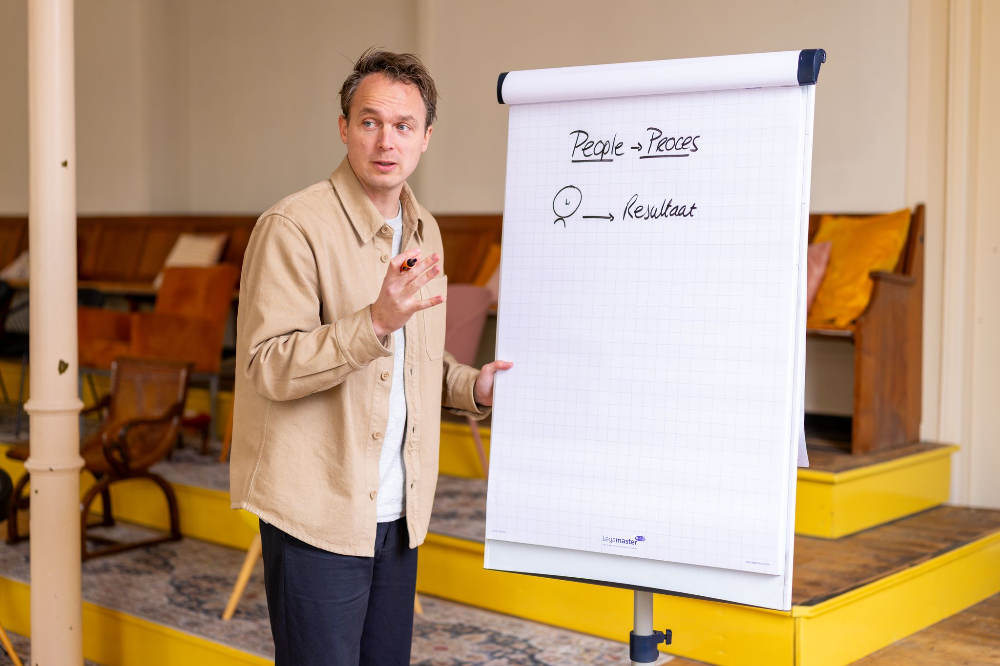

Over Koen
Ik geef door wat ik zelf had willen weten op mijn 25e.
Meer dan vijftien jaar COO-ervaring in snelgroeiende scale-ups — vertaald naar praktische handvatten voor jouw MT.

Zelf jarenlang vastgezeten in de waan van de dag.
Ik ben Koen van der Meer. Ik heb in meerdere MT’s gezeten die vooral met de waan van de dag bezig waren, met vergaderingen die niets opleverden.
Vastgezet in het operationele, terwijl ik eigenlijk strategisch had moeten meedenken. Wat ik toen had willen leren, geef ik nu door: praktische handvatten die het aansturen van een bedrijf makkelijker maken.
Ik ben geen inspiratiecoach. Ik ben een personal trainer voor je MT.
- Bedrijven begeleid
- 77
- MT-sessies gefaciliteerd
- 200+
- Gemiddelde trainersscore
- 9,2
Concreet: Crossphase €0,5M → €6M · Van Son €15M → €23M · Bit van verlies naar +25% winst.
01 Ideeën die we gebruiken
De denkmodellen achter het werk.
De Wet van de Lat
Waarom je bedrijf nooit sneller groeit dan het niveau van je managementteam.
De Groeiparadox
Waarom harder werken je groei op een gegeven moment juist afremt.
Drie groeibarrières
Wat scale-ups vastzet op weg van €1M naar €10M — en hoe je er langs komt.
Vier type meetings
Het vergaderritme dat operationeel en strategisch eindelijk uit elkaar trekt.